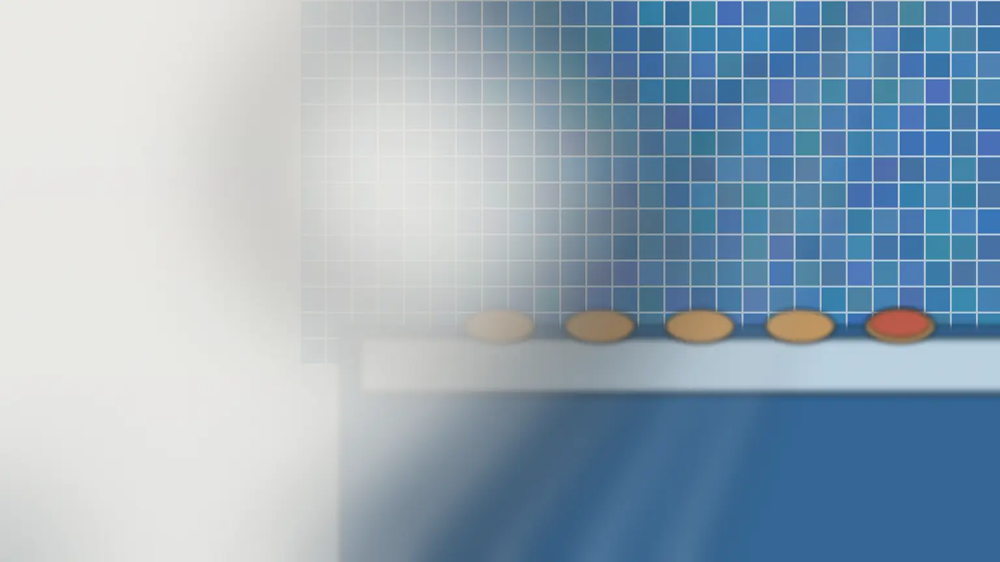
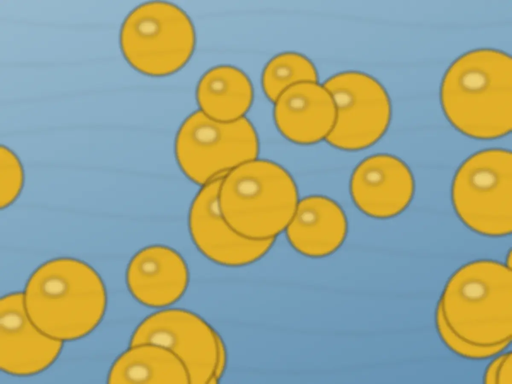
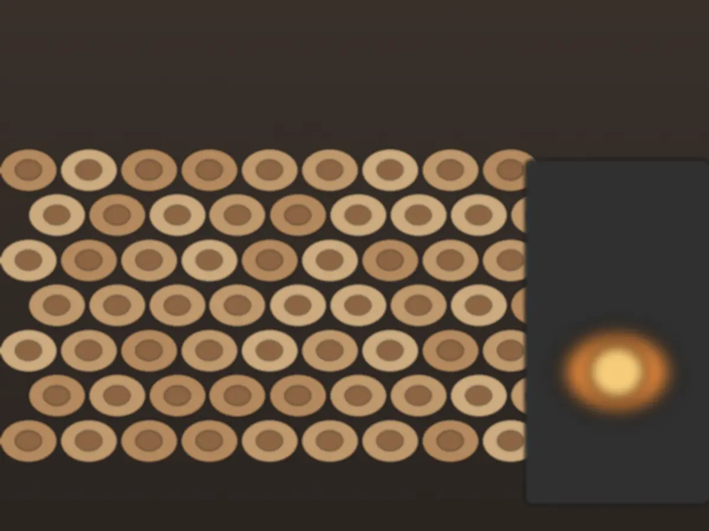
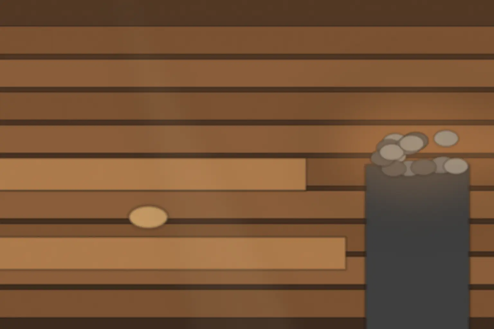
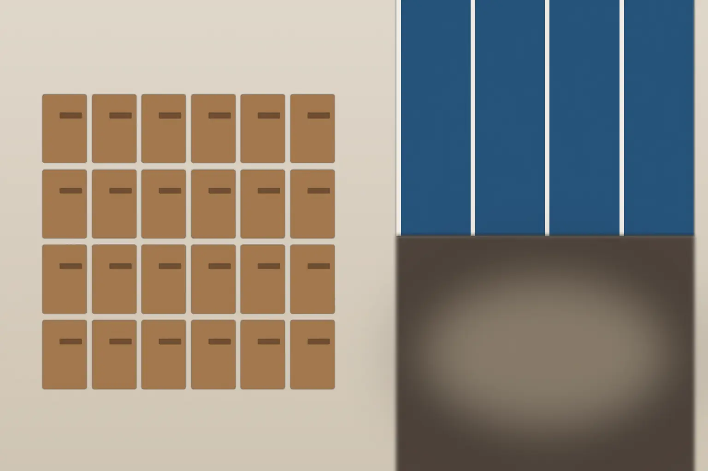

今週の湯
りんご湯
次は8日から、生姜湯。

一面薪で沸かす、町の銭湯とサウナ
季節の湯と釜場の話は、月ごとの号で。
予約は要りません。決まっていない段階のご相談も、お問い合わせから。2日以内に返信します。
今週の湯
りんご湯
次は8日から、生姜湯。

予告
番台の札
入浴 大人520円税込
営業 15:00–24:00・月曜休み
ゆずり湯だより
十一月号

今月の湯毎週替わります
日曜の朝湯
高窓から入る朝の光が、湯気の中に筋になって見えます。


初めての方へ
貸し切りと撮影のご相談を受けています。急ぎのときは、電話をどうぞ。
| 大人（中学生以上） | 520円 |
|---|---|
| 小学生 | 200円 |
| 未就学 | 100円 |
| サウナ（入浴料に追加） | ＋300円 |
| 貸しタオル（大・小） | 100円 |
入浴料に含むもの：石けんとシャンプー（備え付け）。含まないもの：タオル。サウナを使うときだけ、300円が加わります。
15:00–24:00
最終受付は23:30。日曜は朝湯もあり、8:00–12:00です。
月曜
祝日の場合は翌日に休みます。
なくても大丈夫
タオルを借りれば、手ぶらで合計620円から入れます。